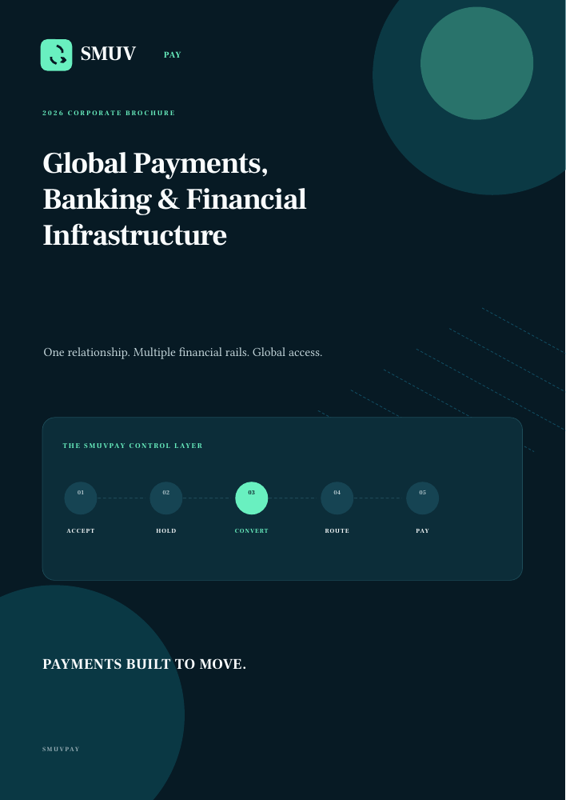

Infrastructure
Payment acceptance, banking, FX, payouts, cards, digital assets, reporting and risk controls.
Global payments, banking & financial infrastructure
The intersection of seamless money movement and cross-border orchestration.
SMUVPAY helps businesses access and coordinate the infrastructure to collect, hold, convert, route and distribute money across markets.
01 / The model
Global money movement is fragmented. We bring the pieces into one operating relationship.
Payment acceptance, banking, FX, payouts, cards, digital assets, reporting and risk controls.
Banks, EMIs, acquirers, gateways, payment institutions, FX desks, issuers and local rail partners.
Qualification, architecture design, provider matching, onboarding support, optimisation and expansion.
One commercial ecosystem built to reduce the number of disconnected relationships a business needs to operate globally.
02 / Capabilities
The right infrastructure depends on your market, transaction flow and compliance profile.
Accept payments across markets with an infrastructure stack designed around the customer, jurisdiction and transaction flow.
THE OUTCOMECollect locally. Route intelligently. Settle globally.
Selected services are delivered through regulated third-party institutions and are subject to jurisdiction, eligibility and partner approval.
03 / Institutional stack
The operating disciplines that sit behind serious transaction-banking relationships.
Large financial institutions do more than move a transaction from A to B. They manage identity, liquidity, settlement, exceptions, data and risk as one connected operating system. SMUVPAY can help businesses scope and access the relevant partner infrastructure.
Route each payment by market, currency, method, issuer, risk score, cost and availability. Add failover, retries and smart cascading without rebuilding the front end.
Layer identity, 3DS, velocity, device and transaction controls with chargeback prevention, evidence workflows and dispute reporting.
Support recurring billing, invoicing, usage-based pricing, payment links, failed-payment recovery and automated collections.
Match authorisations, captures, refunds, fees, reserves, chargebacks and provider settlements into one operational view.
Use named accounts, virtual IBANs, payment references and segregated structures to identify incoming funds and simplify collections.
Coordinate balances, sweeping, cash concentration, short-term liquidity and visibility across entities, currencies and operating accounts.
Map the banking relationships, nostro/vostro structures, local clearing routes and settlement partners behind cross-border movement.
Plan prefunding, intraday liquidity, FX conversion, limits, exposure and exception escalation with capable banking and treasury partners.
Build the information layer around ISO 20022-ready messaging, SWIFT-connected partners where applicable, audit trails, permissions, maker-checker controls and executive reporting.
04 / Independent rails
For companies that want to own their payment infrastructure, not rent it.
SMUVPAY scopes, designs and stands up independent processing and payment rails — white-label processors, standalone gateways and issuer programmes — on top of licensed partner infrastructure.
Scheme membership, processor and switch selection, gateway design and route mapping for standalone operations.
Launch a branded PSP or processor on licensed infrastructure without building a switch from scratch.
Direct-to-scheme, alternative and local clearing rails configured around your own flows.
Match to licensed acquirers, issuers, EMIs and rails in the markets you operate.
KYB/AML frameworks, reconciliation, reporting and the support model that comes with running your own rails.
Failover, approval optimisation and expansion as volumes and markets grow.
05 / Payment integration
Secure checkout and processing, wired into the product you've already built.
SMUVPAY integrates secure payment gateways into existing websites and applications — processing, transaction handling, webhooks and the full success and failure flow, tested end-to-end before go-live.
Connect secure gateways — Stripe, Adyen, Checkout.com, local acquirers and alternative methods — into your site or app.
Set up authorisation, capture, refunds and settlement handling with clear transaction states.
Handle approvals, declines, 3DS challenges and errors with the right customer feedback at every step.
Configure payment confirmation, webhook endpoints and idempotent server-side handling you can rely on.
PCI-compliant hosted or API checkout with tokenisation, fraud checks and strong customer authentication.
Full sandbox-to-live test flow — card cases, edge cases and rollback — before your first real transaction.
06 / OTC desk
Large-ticket conversion, negotiated and settled off the open market.
An over-the-counter desk for businesses moving significant volume — institutional FX and stablecoin conversion with negotiated pricing, deep liquidity and settlement support, including face-to-face cash-to-stablecoin where clients need it.
Negotiated spot pricing for large fiat conversions across major and emerging-market pairs.
Large-volume fiat-to-stablecoin and stablecoin-to-fiat on and off-ramps.
Multiple desks and quotes with best-execution routing across counterparties.
Delivery-versus-payment settlement and partner safeguarding across currencies.
Forward and structured conversion support through licensed partners.
Audit-ready pricing, execution and settlement reporting with maker-checker controls.
For clients that need it, we coordinate in-person cash-to-stablecoin and stablecoin-to-cash conversion through regulated counterparties — always subject to eligibility, KYC and jurisdiction.
OTC services are delivered through regulated counterparties and are subject to eligibility, KYC and minimum transaction thresholds.
07 / How it works
From the first conversation through to ongoing optimisation.
Understand your business, markets, licences, currencies and payment flows.
Design an acquiring, banking, FX, payout and treasury stack that fits.
Match suitable counterparties and support the case through onboarding.
Monitor performance, strengthen resilience and add rails as you grow.
Acquiring + banking + FX + payouts + local rails + treasury + reporting
08 / Industries
Every risk profile gets the rails and counterparties that actually want it.
From everyday retail to regulated high-risk verticals, SMUVPAY matches each merchant to the acquiring, banking and payout partners that accept its risk profile — no forcing a square peg into a round rail.
High-risk verticals are served through specialised regulated counterparties and are subject to enhanced due diligence, jurisdiction and partner approval.
09 / The ecosystem
From digital platforms to global enterprises, SMUVPAY is designed around complex payment flows rather than a single vertical.
Work with usFintech, commerce, marketplaces, creator platforms, regulated sectors and cross-border enterprises.
Introduce qualified businesses and develop a commercial relationship with the SMUVPAY network.
Join a network of counterparties serving the right clients, markets and transaction flows.
The full picture
Our 2026 corporate brochure covers the wider ecosystem, including financial infrastructure advisory, network intelligence and the long-term SMUVPAY OS vision.
View the brochure
10 / Connect
Whether you're building your payment infrastructure, referring a business or joining the provider network, let's start a conversation.